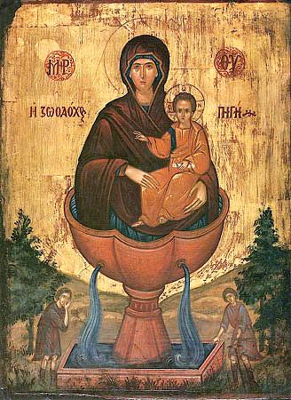

Избра́нней от всех родо́в Влады́чице Богоро́дице, благода́тную по́мощь нам явля́ющей, похва́льная воспису́ем Ти раби́ Твои́, Богоро́дице. Ты же, я́ко Преблага́я Ма́ти Бо́жия, изле́й на нас вели́кия и бога́тыя ми́лости Твоя́, неду́ги на́ша исцели́ и ско́рби утоли́, да благода́рственно зове́м Тебе́: Ра́дуйся, Влады́чице, Живоно́сный Исто́чниче ми́лости неоскудева́ющия.
Арха́нгел и А́нгел мно́жество недоумева́ют Тебе́, Ма́терь Бо́га Сло́ва, на вода́х зе́млю утверди́вшаго, разу́мно хвали́ти по достоя́нию. Мы же, Честне́йшая Херуви́м, и Сла́внейшая без сравне́ния Серафи́м, во умиле́нии о Твои́х благодея́ниих, на нас бы́вших, дерза́ем зва́ти Тебе́:
Ра́дуйся, Влады́чице, Бо́гом Отце́м избра́нная; ра́дуйся, Ду́хом Святы́м осия́нная.
Ра́дуйся, Рождество́м Сы́на Бо́жия превознесе́нная; ра́дуйся, в жена́х благослове́нная.
Ра́дуйся, Богоро́дицею велича́емая; ра́дуйся, от всех родо́в ублажа́емая.
Ра́дуйся, Влады́чице, Живоно́сный Исто́чниче ми́лости неоскудева́ющия.
Ви́дящи, Премилосе́рдная Ма́ти, слепца́, в пусты́ни блужда́ющаго и от жа́жды стра́ждущаго, исто́чник воды́ живы́я цели́тельныя показа́ла еси́; он же, исцеле́ние улучи́в благода́рственно возопи́: Аллилу́иа.
Разуме́в воево́да глас Твой Боже́ственный, исцеле́ния ра́ди слепца́, исто́чник воды́ указу́ющий, позна́ его́ я́ко купе́ль Силоа́мскую, и́же не то́кмо жа́ждущаго напоя́ет, но и от слепоты́ того́ свобожда́ет; мы же ми́лости Твоея́, Де́во Богоро́дице, и́щуще, взыва́ем Тебе́ си́це:
Ра́дуйся, Влады́чице, купе́ль спасе́ния живопису́ющая; ра́дуйся, слепоту́ душе́вную и теле́сную исцеля́ющая.
Ра́дуйся, разсла́бленных утвержде́ние; ра́дуйся, хромы́х хожде́ние.
Ра́дуйся, Ма́ти Све́та, слепы́м о́чи отверза́ющая; ра́дуйся, све́том и́стины во тьме седя́щия озаря́ющая.
Ра́дуйся, Влады́чице, Живоно́сный Исто́чниче ми́лости неоскудева́ющия.
Си́ла Вы́шняго осеня́ет всех, с ве́рою и благогове́нием притека́ющих к Живоно́сному Исто́чнику Твоему́, Пречи́стая Госпоже́ Влады́чице. Сего́ ра́ди си́лою благода́ти Его́ осени́ и нас, Богома́ти, смире́нно к Тебе́ припа́дающия и моле́бно о Тебе́ вопию́щия: Аллилу́иа.
Иму́щи бога́тство милосе́рдия неизрече́нное, Влады́чице, всем боля́щим ру́ку по́мощи Твоея́, неду́ги врачу́ющую, стра́сти исцеля́ющую, в Живоно́снем Исто́чнице Твое́м простира́еши: сего́ ра́ди вопие́м Тебе́ си́це:
Ра́дуйся, Исто́чниче непрестаю́щия ра́дости; ра́дуйся, Ча́ше неизрече́нныя бла́гости.
Ра́дуйся, сокро́вище благода́ти неоскудева́емое; ра́дуйся, ми́лости у Тебе́ прося́щим ско́ро сию́ подаю́щая.
Ра́дуйся, неду́гов разли́чных исцеле́ние; ра́дуйся, печа́лей на́ших утоле́ние.
Ра́дуйся, Влады́чице, Живоно́сный Исто́чниче ми́лости неоскудева́ющия.
Бу́рею недоуме́ния слепе́ц смуща́шеся, воды́ ища́ жа́жду утоли́ти. И се́, я́коже дре́вле, си́лою Бо́жиею из ка́мене вода́ источи́ся: та́ко и ны́не в пусты́не безво́дней исто́чник яви́ся; та́мо Моисе́й, источи́тель воды́: зде же Ты Сама́, о Богома́ти, служи́тельница чудесе́; те́мже мо́лимся: жа́ждущия ду́ши на́ша благоче́стия напо́й вода́ми, да зове́м о Тебе́: Аллилу́иа.
Слы́ша воево́да ди́вный глас Твой, Ма́ти милосе́рдия, исто́чник воды́ указу́ющий, во е́же жа́ждущаго напои́ти и слепоту́ его́ исцели́ти, и сбытие́ слове́с Твои́х зря, возопи́ си́це:
Ра́дуйся, Влады́чице, страда́льцев утеша́ющая; ра́дуйся, боля́щих возставля́ющая.
Ра́дуйся, немы́м уста́ разреша́ющая; ра́дуйся, всех немощны́х врачу́ющая.
Ра́дуйся, бе́дствующим поможе́ние; ра́дуйся, уныва́ющих утеше́ние.
Ра́дуйся, Влады́чице, Живоно́сный Исто́чниче ми́лости неоскудева́ющия.
Боже́ственную во́ду от Живоно́снаго Исто́чника Твоего́, то́ки благода́ти излива́ющаго, почерпа́юще во исцеле́ние неду́гов душе́вных и теле́сных, Де́во Богороди́тельнице, благода́рственно вопие́м о Тебе́: Аллилу́иа.
Ви́деша лю́дие слепца́, водо́ю Живоно́снаго Исто́чника Твоего́ прозре́вшаго, Богома́ти, потща́шася пе́сньми я́ко дара́ми послужи́ти Тебе́ си́це:
Ра́дуйся, Влады́чице, милосе́рдия две́ри ве́рным отверза́ющая; ра́дуйся, наде́ющихся на Тебе́ не посрамля́ющая.
Ра́дуйся, бе́дствующих утеша́ющая; ра́дуйся, от напа́стей свобожда́ющая.
Ра́дуйся, изнемога́ющих укрепля́ющая; ра́дуйся, неду́гующих врачу́ющая.
Ра́дуйся, Влады́чице, Живоно́сный Исто́чниче ми́лости неоскудева́ющия.
Пропове́дник чу́да Твоего́, Ма́ти Бо́жия, бысть воево́да, я́ко ди́вно слепе́ц водо́ю от Живоно́снаго Исто́чника Твоего́ прозре́, си́це и нам те́мныя зе́ницы душе́вныя просвети́, да благода́рственно пропове́дуем ми́лости Твоя́, зову́ще: Аллилу́иа.
Возсия́ нам Живоно́сный Исто́чник Твой, Премилосе́рдная Ма́ти, многоразли́чную благода́ть Сы́на Твоего́ и Бо́га на́шего, Христа́ Жизнода́вца источа́яй. Сего́ ра́ди прино́сим Ти пе́ния сицева́я:
Ра́дуйся, Влады́чице, усе́рдная на́ша Засту́пнице; ра́дуйся, хра́мов Бо́жиих Храни́тельнице.
Ра́дуйся, святы́х оби́телей пресла́вная Игу́мение; ра́дуйся, в и́ночестве подвиза́ющихся вразумле́ние.
Ра́дуйся, мона́шествующих в послуша́нии укрепле́ние; ра́дуйся, всех христиа́н покро́в и защище́ние.
Ра́дуйся, Влады́чице, Живоно́сный Исто́чниче ми́лости неоскудева́ющия.
Хотя́ благочести́вый Лев воево́да, ему́же ца́рство предрекла́ еси, благода́рственная принести́ Тебе́, храм на ме́сте явле́ния Твоего́ чудесе́ устро́и, Живоно́сный Исто́чник наименова́в о́ный, да вси, по́мощи Твоея́ и́щущия, зде обрета́ют ю́, вопию́ще о Тебе́: Аллилу́иа.
Но́вая купе́ль Силоа́мская, па́че о́ныя дре́вния, яви́ся, Пречи́стая Влады́чице, храм Твой, в Не́мже поклоня́емся ико́не Живоно́снаго Исто́чника, и́бо не еди́ною в ле́то и то́кмо пе́рвее входя́щим здра́вие те́ла подае́ши, но вы́ну вся́кий не́дуг душе́вный и теле́сный врачу́еши. Сего́ ра́ди вопие́м Тебе́:
Ра́дуйся, купе́ле, ско́рби на́ша погружа́ющая; ра́дуйся, ча́ше ра́дования, в печа́ли утеше́ние подаю́щая.
Ра́дуйся, ка́меню, жа́ждущия жизни напоя́яй; ра́дуйся, дре́во, го́рькия во́ды мо́ря жите́йскаго услажда́ющее.
Ра́дуйся, исто́чниче животво́рныя воды́ неистощи́мый; ра́дуйся, ба́не, грехо́вную скве́рну со́вести на́шея омыва́ющая.
Ра́дуйся, Влады́чице, Живоно́сный Исто́чниче ми́лости неоскудева́ющия.
Стра́нное и пресла́вное чу́до яви́ся храм Живоно́снаго Исто́чника Твоего́, Богоро́дице, в не́мже жа́жда духо́вная и телес́ная утоля́ется, и боле́зньми одержи́мии исцеля́ются. Мы же, благода́ть такову́ю прославля́юще, вопие́м Ти: Аллилу́иа.
Всем с ве́рою приходя́щим на Живоно́сный Исто́чник Твой, вся потре́бная подае́ши, Преми́лостивая Госпоже́ Богоро́дице. Те́мже благода́рственно вопие́м Тебе́ си́це:
Ра́дуйся, Влады́чице, я́ко Тобо́ю Безпло́тный воплоти́ся; ра́дуйся, Де́во, я́ко чистоте́ Твое́й А́нгели удиви́шася.
Ра́дуйся, стра́ждущих ма́терей утеше́ние; ра́дуйся, чад безма́терних охране́ние.
Ра́дуйся, младе́нцев воспита́ние; ра́дуйся, ю́ных Наста́внице.
Ра́дуйся, Влады́чице, Живоно́сный Исто́чниче ми́лости неоскудева́ющия.
Вся́кое естество́ А́нгельское и челове́ческое диви́тся милосе́рдию Твоему́, Пресвята́я Де́во, я́ко всегда́ и всем явля́ешися Помо́щница и Засту́пница, пою́щим о Тебе́: Аллилу́иа.
Вети́и многовеща́ннии не мо́гут воспе́ти досто́йно Живоно́сный Исто́чник неистощи́мыя благода́ти Твоея́, ниже́ изъясни́ти си́лу чуде́с Твои́х, во исцеле́ние неду́жных и на вся́кую по́льзу душе́вную и теле́сную челове́ком явля́емую. Мы же похва́льная воспису́ем Тебе́ си́це:
Ра́дуйся, хра́ме Бо́га Жива́го; ра́дуйся, жили́ще Ду́ха Свята́го.
Ра́дуйся, А́нгелов сла́во; ра́дуйся, вселе́нныя Держа́во.
Ра́дуйся, ми́ра спасе́ние; ра́дуйся, ве́рных упова́ние.
Ра́дуйся, Влады́чице, Живоно́сный Исто́чниче ми́лости неоскудева́ющия.
Спасти́ хотя́ вся стра́ждущия, исто́чник жи́зни яви́ла еси́ ми́рови, Пресвята́я Богоро́дице, в вода́х благода́ти, да вси, в ско́рбех и печа́лех исцеле́ние и утеше́ние прие́млюще, благода́рно зове́м о Тебе́: Аллилу́иа.
Стена́ и покро́в в беда́х и ну́ждах по́мощи Твоея́ прося́щим су́щи, Влады́чице ми́ра, Живоно́сный Исто́чник всем яви́ла еси́, да бу́дет от вся́ких боле́зней огражде́ние, в напа́стех и печа́лех утеше́ние, вопию́щим Ти такова́я:
Ра́дуйся, Влады́чице, го́рдых и стропти́вых челове́к усмире́ние; ра́дуйся, лука́вых и злых наме́рений пресече́ние.
Ра́дуйся, оби́димых заступле́ние; ра́дуйся, неви́нных оправда́ние.
Ра́дуйся, во́инов во бране́х огражде́ние; ра́дуйся, плене́нных от злых свобожде́ние.
Ра́дуйся, Влады́чице, Живоно́сный Исто́чниче ми́лости неоскудева́ющия.
Пе́ние всеумиле́нное пред Живоно́сным Исто́чником Твои́м па́ки и па́ки прино́сим Тебе́, Богоро́дице, в покая́нии зову́ще из глубины́ души́: Влады́чице, приими́ моли́твы раб Твои́х и изба́ви нас от вся́кия ско́рби и боле́зни, ну́жды и печа́ли, да вопие́м о Тебе́ Бо́гу: Аллилу́иа.
Светоза́рною свеще́ю сия́ет в ми́ре луча́ми благода́ти Боже́ственный Исто́чник Твой, Пресвята́я Богоро́дице, чудесы́ явле́нными умы́ и сердца́ просвеща́яй и наставля́яй зва́ти Тебе́:
Ра́дуйся, Влады́чице, помысло́в просвеще́ние; ра́дуйся, серде́ц на́ших очище́ние.
Ра́дуйся, ду́ха обновле́ние; ра́дуйся, душ освяще́ние.
Ра́дуйся, здра́вия укрепле́ние; ра́дуйся, целому́дрия соблюде́ние.
Ра́дуйся, Влады́чице, Живоно́сный Исто́чниче ми́лости неоскудева́ющия.
Благода́ти Твоея́ Живоно́сный Исто́чник иму́ще, Пресвята́я Де́во, к Тебе́ прибега́ем, я́ко к неруши́мей стене́ и предста́тельству: при́зри благосе́рдием, Пресвята́я Богоро́дице, на лю́тое на́ше озлобле́ние и исцели́ душ и теле́с на́ших ско́рби и боле́зни, да зове́м о Тебе́ Бо́гови: Аллилу́иа.
Пою́ще Твоя́ чудеса́, хва́лим и сла́вим Живоно́сный Исто́чник Твой, Пресвята́я Де́во, от него́же почерпа́юще то́ки многоразли́чныя благода́ти, велича́ем Тя похвалы́ сицевы́ми:
Ра́дуйся, Отрокови́це Богоизбра́нная; ра́дуйся, Неве́сто Боговенча́нная.
Ра́дуйся, в жена́х благослове́нная; ра́дуйся, па́че го́рних превознесе́нная.
Ра́дуйся, Престо́лу Госпо́дню вы́ну предстоя́щая; ра́дуйся, Засту́пнице на́ша, за мир всегда́ моля́щаяся.
Ра́дуйся, Влады́чице, Живоно́сный Исто́чниче ми́лости неоскудева́ющия.
О, Всепе́тая Ма́ти, Живоно́сный Исто́чник Твой ми́ру да́вшая, от него́же излива́еши нам вели́кия и бога́тыя ми́лости, приими́ благода́рственное сие́ моле́ние на́ше, напо́й нас от исто́чника милости Твоея в ве́це ны́нешнем и гряду́щем: да вы́ну зове́м о Тебе́: Аллилу́иа.
Арха́нгел и А́нгел мно́жество недоумева́ют Тебе́, Ма́терь Бо́га Сло́ва, на вода́х зе́млю утверди́вшаго, разу́мно хвали́ти по достоя́нию. Мы же, Честне́йшая Херуви́м, и Сла́внейшая без сравне́ния Серафи́м, во умиле́нии о Твои́х благодея́ниих, на нас бы́вших, дерза́ем зва́ти Тебе́:
Ра́дуйся, Влады́чице, Бо́гом Отце́м избра́нная; ра́дуйся, Ду́хом Святы́м осия́нная.
Ра́дуйся, Рождество́м Сы́на Бо́жия превознесе́нная; ра́дуйся, в жена́х благослове́нная.
Ра́дуйся, Богоро́дицею велича́емая; ра́дуйся, от всех родо́в ублажа́емая.
Ра́дуйся, Влады́чице, Живоно́сный Исто́чниче ми́лости неоскудева́ющия.
Избра́нней от всех родо́в Влады́чице Богоро́дице, благода́тную по́мощь нам явля́ющей, похва́льная воспису́ем Ти раби́ Твои́, Богоро́дице. Ты же, я́ко Преблага́я Ма́ти Бо́жия, изле́й на нас вели́кия и бога́тыя ми́лости Твоя́, неду́ги на́ша исцели́ и ско́рби утоли́, да благода́рственно зове́м Тебе́: Ра́дуйся, Влады́чице, Живоно́сный Исто́чниче ми́лости неоскудева́ющия.
О, Пресвята́я Де́во, Всеми́лостивая Госпоже́ Влады́чице Богоро́дице, Живоно́сный Исто́чник Твой, целе́бныя да́ры на здра́вие душ и теле́с на́ших и на спасе́ние ми́ру точа́щий, подала́ еси́ нам, те́мже благода́рни су́ще усе́рдно мо́лим Тя, Цари́це Пресвята́я, моли́ Сы́на Твоего́ и Бо́га на́шего да́ти нам оставле́ние прегреше́ний и вся́кой души́ скорбя́щей и озло́бленней ми́лость и утеше́ние, и от бед, скорбе́й и боле́зней свобожде́ние. Пода́ждь, Госпоже́, хра́му сему́ и сим лю́дем покрове́ние [и святе́й оби́тели сей соблюде́ние], гра́ду сему́ [или́: ве́си сей] сохране́ние, стране́ на́шей от напа́стей избавле́ние и огражде́ние, да ми́рное зде поживе́м житие́, и в бу́дущем ве́це сподо́бимся ви́дети Тебе́, Засту́пницу на́шу, во сла́ве Ца́рствия Сы́на Твоего́ и Бо́га на́шего, Ему́же сла́ва и держа́ва со Отце́м и Пресвяты́м Ду́хом во ве́ки веко́в. Ами́нь.
☧